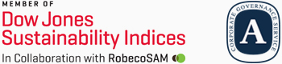

- Home
- 사회적가치
- 지속가능경영
- 지속가능경영 전략
지속가능경영 전략
SK주식회사의 지속가능경영 근간, SKMS(SK Management System)
1979년 제정된 SK그룹 고유의 경영관리체계 SKMS는 SK의 존속과 성장에 근간이 되어온 경영원리이며, SK 기업문화의 토대로써 경영활동과 구성원의 업무수행에 있어 올바른 의사결정의 기준이 되어 왔습니다. SK주식회사는 SKMS에 명시된 ‘기업은 안정과 성장을 지속적으로 이루어 영구히 존속ㆍ발전하여야 합니다. 이를 통하여 고객, 구성원, 주주에 대한 가치를 창출함으로써 사회ㆍ경제 발전에 핵심적인 역할을 수행하여야 하며, 나아가 인류의 행복에 공헌하여야 한다’는 경영철학을 바탕으로 지속가능경영을 추진하고 있습니다.
지속가능경영 비전
모든 이해관계자의
지속적 행복 창출
-
주주/투자자
윤리/투명경영
Governance
-
고객
고객중심경영
Sustainable
Value Creation -
임직원
인재경영
People & Culture
-
협력회사
동반성장
Winning with
Our Biz.Partner -
환경
환경경영
Toward Zero
Emission -
지역사회
지역사회공헌
Social Investment
지속가능경영 전략 방향
SK주식회사는 '지속가능한 발전 및 이해관계자의 행복'을 실현하기 위해 지속가능경영 전략 방향을 6가지로 정의하고 각 전략 방향에 대한 담당 조직과 과제를 도출하며 지속가능한 기업이 되기 위해 노력하고 있습니다.
| 전략 방향 | 주요 활동 |
|---|---|
| 윤리/투명경영 |
투명하고 윤리적인 경영 활동을 통한 이해관계자 신뢰 구축
- 기업지배구조 |
| 고객중심경영 | |
| 인재경영 |
우수 인재 확보를 통한 기업 경쟁력 확보 및 임직원 행복을 창출하는 Happy Hompany 구축
- 핵심인재확보 |
| 동반성장 |
협력회사 협업 및 지원을 통한 미래 지향적인 생태계 구축 및 협력회사 지속가능경영 문화 확산 |
| 환경경영 | |
| 지역사회공헌 |
사회공헌 활동을 통한 사회 문제 해결 및 소외 계층 지원 |
주요 대외 Recognitions
SK주식회사는 지속가능경영 활동을 통해 다우존스 지속가능성지수 평가에서 복합기업군 분야 8년 연속 DJSI 월드 편입 및 인더스트리 리더로 선정되는 등 사회적 책임 경영을 실천하는 기업으로서 국내 뿐만 아니라 글로벌 수준을 인정받았습니다.
연도 |
Award and Recognitions |
수여/평가 기관 |
|---|---|---|
| 2019 | DJSI(Dow Jones Sustainability Indices) World 8년 연속 편입 및 Industry Leader 선정 [복합기업 부문] | S&P Dow Jones Indices / RobecoSAM |
| ESG(Environment, Social, Governance) 통합 A 등급 | 한국기업지배구조원(KCGS) | |
| 대한민국 지속가능성보고서상(KRCA) 수상 | 한국표준협회(KSA) | |
| 대한민국 사랑받는기업 정부포상 산업통상자원부 장관상 | 산업통상자원부, 중소벤치기업부 | |
| 2018 | DJSI(Dow Jones Sustainability Indices) World 7년 연속 편입 [복합기업 부문] | S&P Dow Jones Indices / RobecoSAM |
| ESG(Environment, Social, Governance) 통합 A+ 등급 | 한국기업지배구조원(KCGS) | |
| 지배구조 우수기업 시상식 최우수상 수상 | 한국기업지배구조원(KCGS) | |
| ESG 우수기업 시상식 대상 수상 | 한국기업지배구조원(KCGS) | |
| 대한민국 사랑받는기업 정부포상 대한상공회의소 회장상 | 산업통상자원부, 중소벤치기업부 | |
| 2017 | DJSI(Dow Jones Sustainability Indices) World 6년 연속 편입 [복합기업 부문] | S&P Dow Jones Indices / RobecoSAM |
| ESG(Environment, Social, Governance) 통합 A+ 등급 | 한국기업지배구조원(ESG) | |
| 한국기업지배구조원 ESG 우수기업 시상식 우수상 수상 | 한국기업지배구조원(ESG) | |
| 대한민국지속가능성보고서상(KRCA) 우수보고서 [서비스 부문] | 한국표준협회(KSA) | |
| 대한민국사랑받는기업 정부포상 한국표준협회장상 | 중소벤치기업부 | |
| 2016 | DJSI World 5년 연속 편입 [복합기업 부문] | S&P Dow Jones Indices / RobecoSAM |
| ESG 통합 A 등급 | 한국기업지배구조원(ESG) | |
| 국가품질혁신상(KNQA) 대통령 표창 [지속가능경영 부문] | 한국표준협회(KSA) | |
| 대한민국지속가능성지수(KSI) 1위 [IT서비스 부문] | 한국표준협회(KSA) | |
| 기업천사지수 산업통상자원부 장관상 [IT서비스 부문 대상] | 이데일리 / 서스틴베스트 | |
| 2015 | DJSI World 4년 연속 편입 [IT서비스 부문] | S&P Dow Jones Indices / RobecoSAM |
| ESG 통합 A 등급 | 한국기업지배구조원(ESG) | |
| 대한민국사랑받는기업 정부포상 한국표준협회장상 | 산업통상자원부 / 산업정책연구원(IPS) | |
| 2014 | DJSI World 3년 연속 편입 [IT서비스 부문] | S&P Dow Jones Indices / RobecoSAM |
| ESG 통합 A 등급 | 한국기업지배구조원(ESG) | |
| 대한민국사랑받는기업 정부포상 지속경영협회장상 | 산업통상자원부 / 산업정책연구원(IPS) | |
| 2013 | DJSI World 2년 연속 편입 [IT서비스 부문] | S&P Dow Jones Indices / RobecoSAM |
| ESG 통합 A 등급 | 한국기업지배구조원(ESG) | |
| CDP(Carbon Disclosure Project) 탄소공개특별상 [신규참여 부문] | CDP 한국위원회 | |
| 2012 | DJSI World 최초 편입 [IT서비스 부문] | S&P Dow Jones Indices / RobecoSAM |
| ESG 통합 A 등급 | 한국기업지배구조원(ESG) | |
| 대한민국지속가능성 보고서상(KRCA) 우수보고서 [최초 부문] | 한국표준협회(KSA) |
